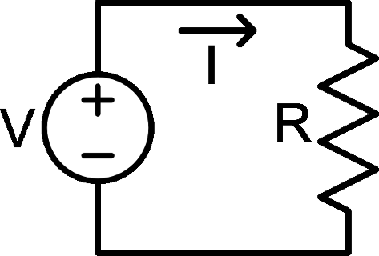
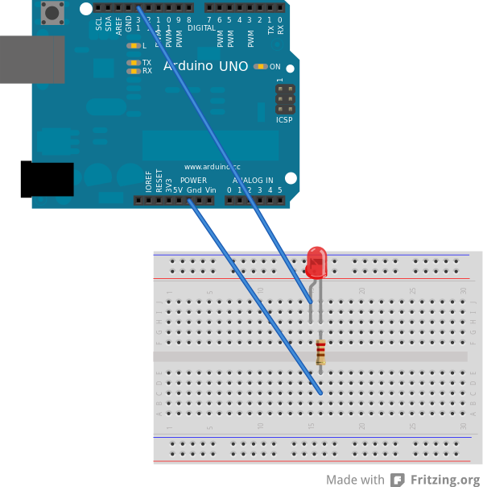
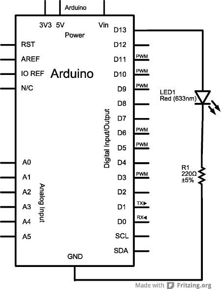

Arduino 101
Basic Circuit Theory
Nick Borko
September 21, 2013

Except where otherwise noted, this work is licensed under
http://creativecommons.org/licenses/by-nc-sa/3.0
Agenda
- Introduction
- Basic Definitions
- Concepts
- Ohm's Law
- Kirchhoff's Circuit Laws
- Power
- Hands on: Blinky Explained
Basic Definitions
- We will discuss concepts in terms of electric engineering, not physics
- Circuit: A collection of electrical components and wires
 http://commons.wikimedia.org/wiki/File:Ohms_law_voltage_source.svg
Basic Definitions
- Current: The rate of flow of electricity
- Measures the flow of electrons over time, represented as the variable "I"
- Unit is ampere, or "amp," abbreviated as "A"
- Voltage: The electric potential to produce a current
- Measures the amount of work required to "push" electrons in a circuit, as "V"
- Unit is volt, abbreviated as "V"
Basic Definitions
- Resistance: The opposition of electrical flow through an element
- Measures the "resistance" of current, as "R"
- Unit is ohm, abbreviated as "Ω"
- Power: The rate at which energy is converted (to something, e.g. heat, light)
- Measures the amount of electrical energy used over time, as "P"
- Unit is watt, abbreviated as "W"
Basic Definitions
A basic circuit diagram, with symbolshttp://commons.wikimedia.org/wiki/File:Ohms_law_voltage_source.svg
See other symbols at:
http://en.wikipedia.org/wiki/Electronic_symbol
Concepts
- We will cover some basic concepts for analyzing and designing direct current (DC) electrical circuits
- The goal is to give you a basic understanding of the concepts of resistance, current and power in real world circuits
- Circuit/network analysis and design can easily span 6 college level classes
Concepts: Combining Components
- Multiple current sources can be added together when placed in parallel
- Multiple voltage sources can be added together when placed in series
- Multiple resistances can combined:
- In series, simply add the resistance
- In parallel, use the following equation:
R1 × R2 × ⋅⋅⋅ × Rn
R1 + R2 + ⋅⋅⋅ + Rn
Concepts: Ohm's Law
- Ohm's Law describes the relationship between voltage, current and resistance
- Represented by the equation: V=I×R
- V is voltage, in volts
- I is current, in amperes
- R is resistance, in ohms
- If you know any two of the variables, you can calculate the third using basic algebra
Concepts: Kirchhoff's Circuit Laws
- Kirchhoff's Voltage Law (KVL) describes the distribution of voltage in a circuit loop
- The sum of all voltage potentials in a circuit loop is 0
- A voltage source can be thought as contributing a "positive" potential to a circuit
- All components in a circuit loop have resistance and contribute to voltage drop, or "negative" potential
Concepts: Kirchhoff's Circuit Laws
- Kirchhoff's Current Law (KCL) describes the distribution of current at a circuit node
- The sum of all current entering a node must equal the sum of all current leaving a node
- This law is the basis of network analysis and most circuit simulation software
- With KVL, used to help determine the total power used by a circuit
Concepts: Power
- Power measures the energy used by a circuit, calculated by multiplying current and voltage
- Represented by the equation: P=I×V
- P is power, in watts
- I is current, in amperes
- V is voltage, in volts
- Most components have a power rating that cannot be exceeded
What does this have to do with the Blinky?
Blinky Schematic

TTL Level = 5V, but in reality ~4.5V
LED Characteristics
Forward Voltage: 2V
Forward Current: 10mA
Max Current: 20mA
Kirchhoff's Voltage Law (KVL)
Resistor Voltage: 4.5 – 2 = 2.5V
Ohm's Law (V=I×R)
Resistor Current: 2.5 / 220 = 11.4mA
If you didn't know the value of R1,
use Ohm's Law:
Resistance: 2.5 / 0.01 = 250Ω
(Remember: 1000mA = 1A)
What's the Point?
- Components have a maximum voltage and current rating
- Operating above these values will destroy the part
- Parts also have "typical" operating values, which should be your target
- Use KVL, KCL and Ohm's Law to pick the right parts
Other Blinky Scenarios
- Smaller resistor used: 100Ω
- Current = 2.5 / 100 = 25mA
- You might be able to get away with it
- Larger resistor used: 470Ω
- Current = 2.5 / 470 = 5.3mA
- LED will be dim (below operating current)
- Skip the resistor?
- 4.5V · 40mA from pin to the LED = BURNOUT
What about Power?
- Power used in the Blinky circuit:
- Calculate power with P=I×V
- P = 0.0114 × 4.5 = 0.051W = 5.1mW
- Resistors have a power rating
- Your blue resistors are 0.25W (1/4W, 250mW)
- Beige resistors are typically 0.125W (1/8W)
- Exceeding the power rating of a component will result in smoke
Don't Destroy Your Arduino
- Output current of an I/O pin is 40mA
- You can probably pull up to 50mA safely
- Total output cannot exceed 200mA on all pins
- Maximum input voltage is 20V
- The on-board voltage regulator cannot dissipate that much heat
- Recommended input voltage is 7-12V
- The maximum power an Arduino can drive is 5V × 0.2A = 1W
Conclusion
- Basic Definitions
- Concepts
- Ohm's Law
- Kirchhoff's Circuit Laws
- Power
- Hands on: Blinky Explained
- Next Steps: Blink some more!
This presentation is available online at:
http://nborko.github.io/arduino101/
All source files used for this workshop are available online at:
https://github.com/nborko/arduino101
 Arduino 101
Arduino 101Presented by Nicholas Borko